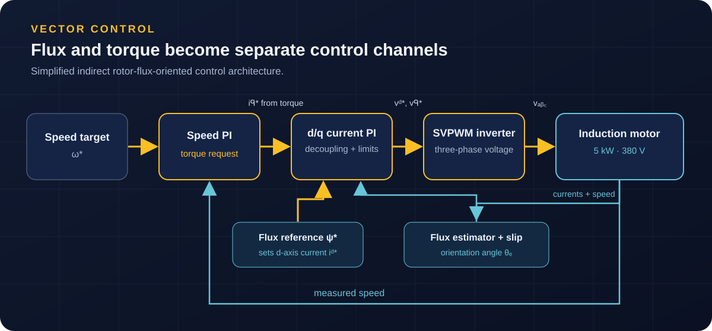

Rendre un moteur asynchrone pilotableMaking an induction motor controllable
Le couple et le flux d’un moteur asynchrone interagissent. La commande vectorielle oriente un repère sur le flux rotorique pour les traiter par deux composantes de courant distinctes.Induction-motor torque and flux are coupled. Field-oriented control aligns a reference frame with rotor flux so two current components can govern them separately.
J’ai construit un modèle dynamique de la machine 5 kW / 380 V en repère fixe, puis un contrôleur dans son propre repère estimé. Cette séparation permet d’observer une éventuelle erreur d’orientation au lieu de la supprimer par hypothèse.I built a dynamic model of the 5 kW / 380 V machine in the stationary frame, then a controller in its separately estimated frame. That separation reveals orientation error instead of assuming it away.
La FOC est indirecte : l’angle vient de l’intégration de la vitesse électrique et du glissement ; le flux est estimé par un modèle en courant. Aucun capteur de flux ni filtre de Kalman n’intervient.The FOC is indirect: its angle comes from electrical speed and slip integration; rotor flux is estimated with a current model. No flux sensor or Kalman filter is involved.
- MachineMotor
Modèle dq, transformées de Clarke et Park.dq model and Clarke/Park transforms.
- OrientationOrientation
Calcul du glissement et estimation du flux rotorique.Slip calculation and rotor-flux estimation.
- AlimentationSupply
Onduleur de tension à deux niveaux et SVPWM.Two-level voltage-source inverter and SVPWM.
Une cascade qui respecte les limitesA cascade that respects limits
Une boucle de vitesse produit la demande de couple ; deux boucles de courant pilotent les axes d et q. Le découplage anticipatif réduit leur interaction.A speed loop produces torque demand; two current loops control d and q axes. Feed-forward decoupling reduces their interaction.
Les correcteurs PI sont réglés à partir des paramètres de la machine. Ils utilisent un anti-windup par back-calculation et des limites explicites de tension, courant et couple. La consigne de flux reste à 0,8 Wb et le contrôle fonctionne à 10 kHz.PI controllers are tuned from machine parameters. They include back-calculation anti-windup and explicit voltage, current and torque limits. Flux reference stays at 0.8 Wb and control runs at 10 kHz.
Pour éviter qu’un seul modèle valide sa propre erreur, j’ai réalisé trois versions sur la même machine et les mêmes échelons : simulation Python, Simulink à blocs fondamentaux, puis Simscape Electrical avec pont IGBT commuté à 10 kHz.To avoid a single model validating its own mistakes, I built three versions around the same motor and speed steps: Python simulation, fundamental-block Simulink, then Simscape Electrical with a 10 kHz switching IGBT bridge.
- PythonPython
Modèle moteur, SVPWM et régulateurs programmés séparément.Motor model, SVPWM and controllers coded separately.
- Simulink V1Simulink V1
Chaîne reconstruite avec des blocs fondamentaux.Drive rebuilt with fundamental blocks.
- Simulink V2Simulink V2
Blocs Simscape et commutation réelle de l’onduleur.Simscape components and switching inverter.

Trois modèles, un comportement cohérentThree models, consistent behaviour
Le scénario associe montée du flux, échelons 800 → 1400 → 600 tr/min, inversion à −800 tr/min et application d’un couple de charge de 10 N·m.The scenario combines flux build-up, 800 → 1400 → 600 rpm steps, reversal to −800 rpm and a 10 N·m load-torque step.
Les échelons s’établissent en 52 à 95 ms suivant la version et la transition, sans dépassement. L’échelon de charge crée un creux d’environ 69 tr/min récupéré en environ 70 ms ; les trois modèles maintiennent un flux de 0,800 Wb et un résidu d’axe q inférieur à 2 %.Across versions and transitions, speed steps settle in 52 to 95 ms without overshoot. The load step causes an approximately 69 rpm dip recovered in about 70 ms; all three models hold 0.800 Wb flux with q-axis flux residual below 2%.
Les petites différences de vitesse et de courant reflètent notamment le contrôle continu ou discret et l’onduleur moyenné ou commuté. Une étude Python séparée de suivi rampe/sinus examine le principe du modèle interne ; elle n’est pas attribuée aux deux modèles MATLAB.Small speed and current differences reflect continuous versus discrete control and averaged versus switching inverter models. A separate Python ramp/sine study probes the internal-model principle; it is not attributed to the two MATLAB models.
Portée et suite possibleScope and next steps
Le projet relie les équations de machine à un entraînement commuté et vérifie qu’une architecture de commande conserve son comportement dans trois environnements de simulation.The project connects machine equations to a switching drive and checks that one control architecture retains its behaviour in three simulation environments.
La consigne de flux reste constante : le défluxage au-dessus de la vitesse de base n’est pas implémenté. L’adaptation de la constante de temps rotorique et une version sans capteur de vitesse seraient des prolongements. Le rapport lié ci-dessous détaille les équations, réglages, résultats et comparaison.Flux reference remains constant: field weakening above base speed is not implemented. Rotor-time-constant adaptation and sensorless speed operation would be natural extensions. The linked report gives equations, tuning, results and comparison.